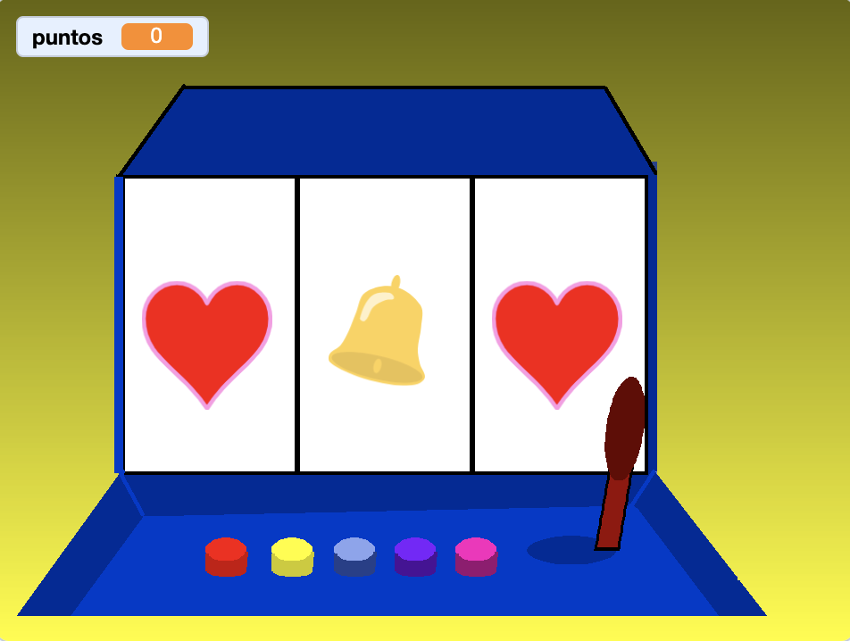

Necesitamos poner una Jostick para comenzar el movimiento de los objetos. He subido un sprite con algunos disfraces pero el alumno podrá seleccionar los que quiera de la biblioteca. Tenemos que tener 3 objetos con disfraces. Y tendremos también cinco botones de colores para cambiar los escenarios.
Usaremos los Escenarios Rojo, Azul..... que dependera del color cuando seleccionamos los botones del escenario.
El juego consiste en que haremos click en el Jostick y comenzara a moverse el primer objeto, cuando termine hara el segundo y cuando termine hara el tercero y si los tres tienen el mismo disfraz puntuaremos.

Nada más empezar ponemos uno de los escenarios de colores.
Posicionaremos los botones de colores.
Si hacemos un click sobre el botón cambiará de disfraz dejándolo de nuevo con anterior disfraz y cambiará el escenario al color que
se ha pulsado.
El Joystick lo posicionamos y ponemos el disfraz "Joystick derecha".
Si hacemos un click sobre el Joystick lo deslizaremos hacia la izquierda, se cambia el disfraz y se vuelve a dejar el "Joystick derecha".
Y hacemos un "enviar Objeto1" ara que comience a moverse el objeto.
Para que funcione correctamente el juego y sume puntos el alumno tendrá que poner los 3 objetos con sus disfraces en el mismo orden. Ya
que al comprobar el resultado de los disfraces lo haremos por "número de disfraz". Se podría hacer también por el nombre del disfraz y no
haría falta ponerlos ordenados.
Se intentará por parte del profesor que sea el alumno el que saque el problema para resolverlo. Si no le dariamos pistas para poder solucionarlo.
El Objeto1 tendrá un "al recibir Objeto1" y haremos un repetir con un número aleatorio.
Cambiara de disfraz y haremos que tenga un sonido.
Cuando el repetir termine tendremos que guardar el número de disfraz en una variable disfraz1.
Y por último haremos un "enviar Objeto2". Para que empieze el siguiente objeto.
El Objeto2 lo haremos igual que el Objeto1 pero guardaremos el disfraz en otra variable objeto2. Y llamaremos al Objeto3.
Y cuando el Objeto3 termine el repetir comprobaremos si el número de disfraz y las variables objeto1 y objeto2 son iguales.
Si es asi se puntuara.
Y el juego quedaría así.

Para ver el juego terminado pulsa
aquí.
Para descargarte el juego terminado pulsa
aquí.